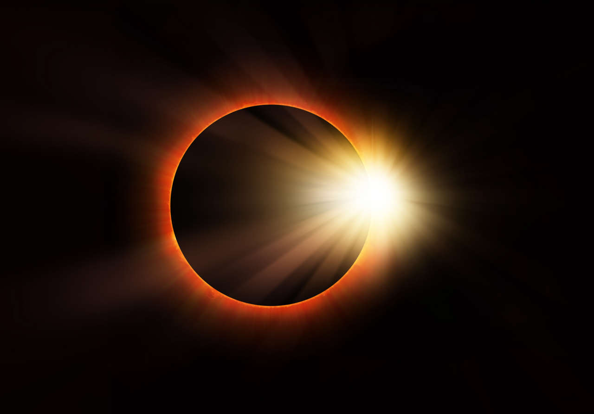
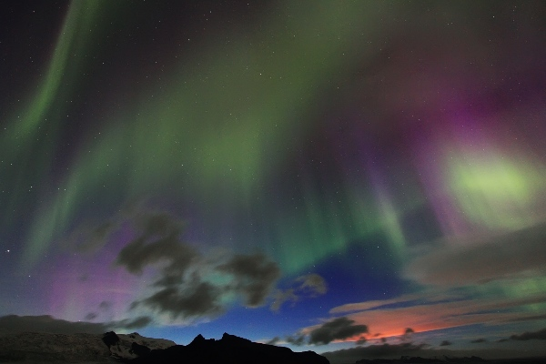
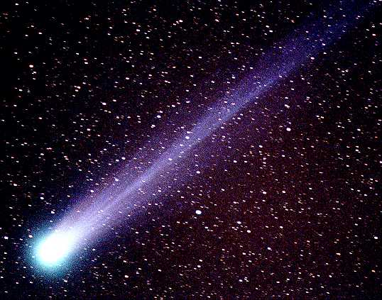

Un eclipse, al igual que los tránsitos y las ocultaciones, es un tipo de sizigia. El término eclipse se utiliza con más frecuencia para describir un eclipse solar, cuando la sombra de la Luna cruza la superficie de la Tierra, o un eclipse lunar, cuando la Luna se desplaza hacia la sombra de la Tierra. Sin embargo, también puede referirse a sucesos que ocurren más allá del sistema Tierra-Luna: por ejemplo, un planeta que se desplaza hacia la sombra proyectada por una de sus lunas, una luna que pasa a la sombra proyectada por su planeta anfitrión o una luna que pasa a la sombra de otra luna.
Las auroras son una interacción natural entre el Sol y la atmósfera terrestre. Nuestro Sol genera un fuerte viento solar , que transporta cerca de un millón de toneladas de plasma extremadamente caliente (electrones, protones y otras partículas) cada segundo. La magnetosfera terrestre actúa como un escudo que nos protege de la mayor parte de este viento solar constante, desviándolo alrededor de la Tierra. Durante una tormenta solar, como una llamarada solar o una eyección de masa coronal , una gran cantidad de plasma se proyecta a través del espacio a alta velocidad como parte del viento solar.
Asteroides y cometas son escombros interplanetarios. Restos rocosos y helados de la formación del Sistema Solar. Suelen viajar a gran distancia de la Tierra, pero podemos verlos a simple vista cuando están cerca de nuestro planeta. Millones de asteroides orbitan alrededor del Sol, normalmente orbitan en un cinturón que se encuentra entre Marte y Júpiter. Generalmente más grandes que los meteoritos y los cometas, los asteroides son restos de roca y metal cuya anchura puede ser ir desde los 100 metros a 960 kilómetros.
